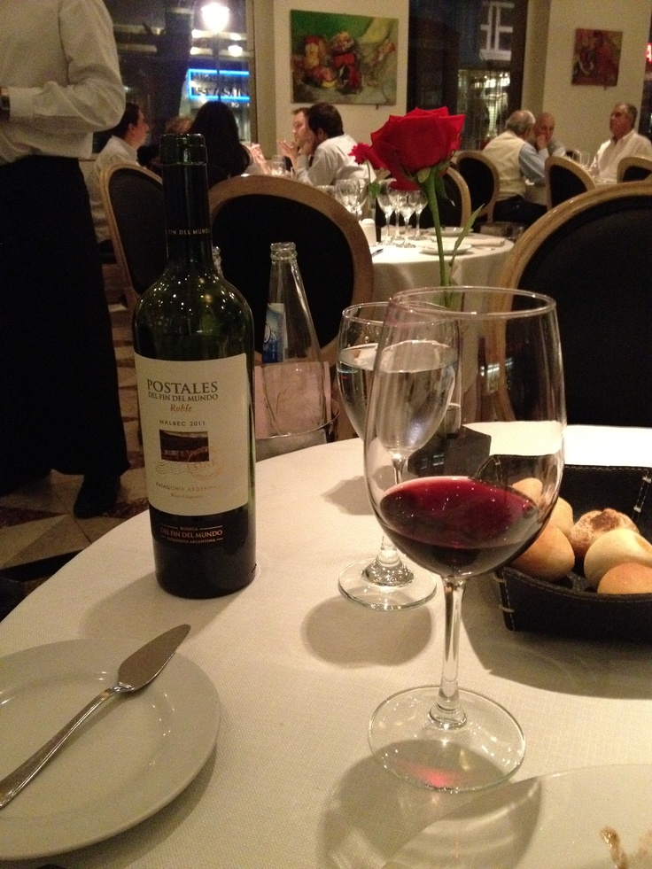

Descubra o vinho ideal para cada momento
A Vinheria Agnello atua há mais de 15 anos em São Paulo, oferecendo uma grande variedade de rótulos nacionais e internacionais.

Sobre a Vinheria Agnello
A Vinheria Agnello é uma empresa familiar dirigida por Giulio e sua filha Bianca. A empresa possui uma loja física e conta com uma equipe especializada no mundo dos vinhos.
Um dos principais diferenciais da Vinheria é o atendimento personalizado. Os vendedores ajudam os clientes a escolher seus vinhos de acordo com a uva, região, vinícola, ocasião e tipo de refeição.
Por que escolher a Agnello?
Nosso objetivo é ajudar cada cliente a encontrar um vinho adequado ao seu gosto e à ocasião.
- Variedade de vinhos nacionais e internacionais
- Atendimento personalizado
- Conhecimento sobre diferentes tipos de uvas
- Dicas de harmonização
- Cuidados especiais com o armazenamento
Conheça alguns tipos de vinho
| Tipo | Características | Harmonização |
|---|---|---|
| Vinho Tinto | Possui sabores e aromas variados | Carnes e massas |
| Vinho Branco | Geralmente mais leve e refrescante | Peixes e frutos do mar |
| Vinho Rosé | Leve e frutado | Saladas e aperitivos |
| Espumante | Possui gás e é bastante refrescante | Comemorações e aperitivos |
Conheça mais sobre o mundo dos vinhos
Aprenda um pouco mais sobre vinhos e descubra novas possibilidades de sabores e harmonizações.
Quer aprender mais?
Você também pode consultar informações sobre vinhos em sites especializados.
Acesse o Wine SpectatorEntre em contato
Envie uma mensagem para a Vinheria Agnello.